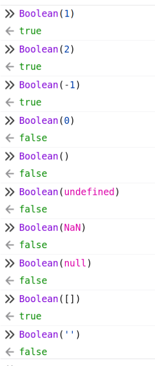

El lenguaje Javascript#
El objetivo de este libro es enseñar a programar para el cliente web. Se presupone que ya se conocen los rudimentos básicos de la programación y los algoritmos. Puesto que el libro está situado en el módulo de DWEC de segundo de DAW, no es necesario enseñar conceptos como Programación orientada a objetos, HTML, JSON, HTTP… No obstante, javascript como lenguaje tiene sus particularidades y son las que vamos a destacar en estos primeros capítulos.
Hay muchos más manuales en Internet que explican mejor muchos de los conceptos de este libro. Aquí dejamos algunos de los recursos principales consultados para elaborarlo y que siguen siendo una referencia más completa y precisa:
Comentarios#
// Comentarios de una línea
/*
*
Comentarios de varias líneas
*
*/
Variables#
// Declaración de Variables
// a = 1;
// No recomendable. (Prohibido en clase)
// Son globales, se declaren donde se declaren.
a = 1;
// var a = 1;
// Única manera antes de ES6. Ya no hay motivo para utilizarlo. (Prohibido en clase)
var a = 1;
// let a = 1;
// Soluciona problemas de scope de var.
// No se puede declarar dos veces.
let a = 1;
// const a = 1;
// No se puede reasignar el valor.
const a = 1;
// var a;
// a = 1;
// Declaración con valor ‘undefined’.
// Asignación del valor.
var a;
a = 1;
// window.a = 1;
// Equivalente a variable global, pero el código queda más claro.
window.a = 1;
Con const no se puede reasignar, pero si es un objeto o array, se puede cambiar su contenido.
Practica con las variables: https://jsfiddle.net/xxjcaxx/f60qayg9/6/
Tipos de Variables#
Javascript es un lenguaje no tipado. Aunque ya veremos que esta definición se queda corta:
No Tipado#
No tipado significa que no es necesario declarar el tipo de datos de una variable al definirla. Esto es diferente a lenguajes como Java o C#, donde se debe especificar si una variable es un entero, un string, etc.
En realidad es Dinámicamente Tipado#
Aunque Javascript no requiere que se declare el tipo de datos, una vez que una variable es asignada, adquiere un tipo. Además, las variables en Javascript pueden cambiar de tipo a lo largo de la ejecución del programa, lo que se conoce como “tipado dinámico”.
let x = 1; // x es un número
x = '1'; // ahora x es un string
Tipado Débil#
Javascript es un lenguaje débilmente tipado, lo que significa que permite operaciones entre diferentes tipos de datos, y a menudo convierte automáticamente los tipos según sea necesario. Estas conversiones automáticas pueden llevar a resultados inesperados, pero también hacen que el lenguaje sea más flexible.
Por ejemplo:
console.log("1234" * 1); // 1234, string convertido a número
console.log(2 / "bla bla"); // NaN, "bla bla" no se puede convertir a número
Tipos Soportados#
Estos son los tipos soportados, como se puede ver, hay menos cantidad que en otros lenguajes sin perder la capacidad de representación de la información. El caso de las variables numéricas es interesante porque internamente usa coma flotante de doble precisión para cualquier número.
Tipo |
Ejemplo |
Descripción |
|---|---|---|
Cadena |
“Hola Mundo” |
Caracteres dentro de comillas |
Número |
9.34 |
Números con punto para decimales |
Boolean |
true |
true o false |
Null |
null |
Sin valor |
Function |
Una función es referenciable como una variable |
|
Object |
Objetos como arrays o otros |
Cabe destacar que Javascript tiene los tipos stringy String o numbery Number, así como Boolean. Con mayúsculas son objetos especiales que pueden ser usados como primitivos, pero también tienen métodos. Las strings siempre se comportan tanto como primitivos como String.
Además, soporta valores especiales:
undefined: Indica que a la variable no se le ha asignado valor.
null: Valor nulo, se comporta como un objeto vacío.
NaN: Not a Number, se obtiene cuando no se puede convertir a número el resultado de una operación.
Inifinity -Infinity: Demasiado grande o pequeño o el infinito en sí mismo. Por ejemplo, se puede hacer un bucle for de 0 a Infinity.
typeOf#
Si queremos saber de qué tipo es una variable, podemos preguntar con typeOf():
let array_mix = [
"abcdef", 2 , 2.1 , 2.9e3 , 2e-3 ,
0o234 , 0x23AF , true , [1,2,3] , {'a': 1, 'b': 2}
];
for (let i=0;i<array_mix.length;i++) {
console.log(typeof(array_mix[i]));
}
string
number
number
number
number
number
number
boolean
object
object
Conversiones#
En javascript las conversiones de tipos no siempre son necesarias, ya que existe un concepto llamado Type coercion que fuerza a una conversión automática cuando se usan distintos tipos.
Además, las funciones constructoras de los objetos Number, String, Boolean invocadas sin new y hacen una conversión de tipos.
(()=>{
const conversions = [];
// String to Number
conversions.push(Number("123")); // 123
conversions.push(Number("123abc")); // NaN
conversions.push(Number("")); // 0
conversions.push(Number(" ")); // 0
// Boolean to Number
conversions.push(Number(true)); // 1
conversions.push(Number(false)); // 0
// Null and Undefined to Number
conversions.push(Number(null)); // 0
conversions.push(Number(undefined)); // NaN
// String to Boolean
conversions.push(Boolean("")); // false
conversions.push(Boolean(" ")); // true
conversions.push(Boolean("false")); // true
// Number to String
conversions.push(String(123)); // "123"
conversions.push(String(0)); // "0"
conversions.push(String(NaN)); // "NaN"
conversions.push(String(Infinity)); // "Infinity"
// Boolean to String
conversions.push(String(true)); // "true"
conversions.push(String(false)); // "false"
// Null and Undefined to String
conversions.push(String(null)); // "null"
conversions.push(String(undefined)); // "undefined"
// Number to Boolean
conversions.push(Boolean(0)); // false
conversions.push(Boolean(1)); // true
conversions.push(Boolean(NaN)); // false
conversions.push(Boolean(Infinity)); // true
// Implicit Coercion in Operations
conversions.push("5" + 1); // "51"
conversions.push("5" - 1); // 4
conversions.push("5" * 2); // 10
conversions.push("5" / 2); // 2.5
conversions.push("5" % 2); // 1
// Coercion with ==
conversions.push(5 == "5"); // true
conversions.push(false == 0); // true
conversions.push(null == undefined); // true
conversions.push([] == false); // true
conversions.push([] == ""); // true
conversions.push([1,2] == "1,2"); // true
// Coercion with ===
conversions.push(5 === "5"); // false
conversions.push(false === 0); // false
conversions.push(null === undefined); // false
conversions.push([] === false); // false
conversions.push([] === ""); // false
conversions.push([1,2] === "1,2"); // false
console.log(conversions);
})();
[
123, NaN, 0, 0,
1, 0, 0, NaN,
false, true, true, "123",
"0", "NaN", "Infinity", "true",
"false", "null", "undefined", false,
true, false, true, "51",
4, 10, 2.5, 1,
true, true, true, true,
true, true, false, false,
false, false, false, false
]
Puede ser útil, pero es una mala práctica usar continuamente la conversión forzada. Es mejor tener claro el tipo de datos que estamos usando. Para evitar los posibles problemas se inventó TypeScript.
Convertir cadenas a números usando parseInt(), parseFloat(), o el operador “+”#
let cadenaNumerica = "1234";
let numero1 = parseInt(cadenaNumerica); // convierte la cadena a un número entero
let numero2 = parseFloat(cadenaNumerica); // convierte la cadena a un número de punto flotante
let numero3 = +"1234"; // convierte la cadena a un número utilizando el operador "+"
(()=>{
const ejemplos = [];
// Ejemplos de parseInt: parseo
ejemplos.push(parseInt("20px")); // 20
ejemplos.push(parseInt("10100", 2)); // 20
ejemplos.push(parseInt("2e1")); // 2
// Ejemplos de Number: conversión de tipo
ejemplos.push(Number("20px")); // NaN
ejemplos.push(Number("2e1")); // 20, notación exponencial
// parseInt ignora caracteres al final que no corresponden con dígitos de la base actual
ejemplos.push(parseInt("010")); // 8, octal implícito
ejemplos.push(parseInt("010", 10)); // 10, usando la base decimal
// Number no detecta octales implícitos, pero puede detectar la notación octal explícita
ejemplos.push(Number("010")); // 10
ejemplos.push(Number("0o10")); // 8, octal explícito
// Ambos pueden manejar números en notación hexadecimal
ejemplos.push(Number("0xF")); // 15
ejemplos.push(parseInt("0xF")); // 15
// Operador unario + para conversión numérica, equivalente a usar Number
ejemplos.push(+"2e1"); // 20
ejemplos.push(+"0xF"); // 15
ejemplos.push(+"010"); // 10
console.log(ejemplos);
})();
[
20, 20, 2, NaN, 20, 10,
10, 10, 8, 15, 15, 20,
15, 10
]
Convertir números a cadenas concatenándolos con una cadena vacía “”#
let numero = 3600;
let cadenaNumero = "" + numero; // convierte el número a una cadena
Obtener la longitud de una cadena o array utilizando .length#
let cadena = "" + 3600;
let longitudCadena = cadena.length; // longitud de la cadena (en este caso, 4)
Convertir cualquier tipo a booleano (Truthy y Falsy)#

// Valores Falsy: false, 0, "", null, undefined, NaN
// Valores Truthy: cualquier valor que no sea Falsy
let valorFalsy = 0;
let valorTruthy = "Hola";
let booleanoFalsy = Boolean(valorFalsy); // convierte el valor a booleano (en este caso, false)
let booleanoTruthy = Boolean(valorTruthy); // convierte el valor a booleano (en este caso, true)
Funciones en JavaScript#
Introducción a las Funciones#
Las funciones son bloques fundamentales de código en JavaScript. Permiten agrupar y reutilizar código, y son esenciales para la programación modular, estructurada y funcional.
Argumentos en las Funciones#
Una característica notable de JavaScript es que no da error si llamas a una función con más argumentos de los que espera. Los argumentos adicionales simplemente son ignorados.
function saludar(nombre) {
console.log("Hola, " + nombre);
}
saludar("Juan", "extra"); // "Hola, Juan"
Hola, Juan
El orden de los argumentos es crucial. Los argumentos se asignan a los parámetros en el orden en que se pasan.
Javascript, en las funciones, crea un objeto llamando arguments que tiene los argumentos pasados, la posición como clave y la cantidad de argumentos con length.
function a(){ console.log(arguments)}
a(1,2,3);
[Arguments] { "0": 1, "1": 2, "2": 3 }
Variables Globales y Efectos Secundarios#
Las funciones pueden utilizar y modificar variables globales, lo que puede llevar a efectos secundarios (side-effects).
let contador = 0;
function incrementar() {
contador++;
}
incrementar();
console.log(contador); // 1
1
En términos generales, evitaremos funciones que usen o modifiquen variables globales. Estas funciones son consideradas como no puras y veremos en posteriores capítulos porqué no se deben utilizar.
Return en Funciones#
Las funciones pueden o no tener un valor de retorno. Si no se especifica un return, la función devuelve undefined por defecto. Las funciones sólo retornan un valor. Si queremos retornar más de uno los podemos agrupar en arrays o objetos.
function sinRetorno() {
let mensaje = "Hola";
}
function conRetorno() {
let mensaje = "Hola";
return mensaje;
}
console.log(sinRetorno(),conRetorno());
undefined Hola
Invocación de Funciones#
Al usar paréntesis (), invocas a la función. Sin paréntesis, haces referencia al objeto que representa la función.
Las Funciones son Objetos#
En JavaScript, las funciones son objetos de primera clase. Esto significa que pueden ser asignadas a variables, pasadas como argumentos y devueltas por otras funciones.
function multiplicar(x, y) {
return x * y;
}
let operacion = multiplicar;
console.log(operacion(2, 3)); // 6
6
La capacidad de Javascript de tratar a las funciones como objetos le permite facilitar el uso de funciones de
Callbacky la programación funcional, que veremos en su capítulo.
Declaración de Funciones#
Declaración de Función#
Las funciones pueden ser declaradas de manera explícita. Este tipo de declaración se carga en tiempo de compilación, permitiendo su uso antes de la declaración (hoisting).
console.log(suma(2, 3)); // 5
function suma(a, b) {
return a + b;
}
5
Expresión de Función#
Las funciones también pueden ser definidas mediante expresiones. Este tipo de función se evalúa en tiempo de ejecución y no soporta hoisting.
let restar = function(a, b) {
return a - b;
};
console.log(restar(5, 3)); // 2
2
Funciones Anónimas#
Las expresiones de función pueden ser anónimas, es decir, no tener un nombre. Al no tener nombre, no se pueden invocar a si mismas, por lo que no se pueden hacer recursivas. Si no tienen nombre y son asignadas a una variable con una expresión de función, adquieren el nombre de la variable. Se suelen usar como funciones de “Callback”, aunque no es lo más recomendable porque luego complican la trazabilidad de los errores.
let dividir = function(a, b) {
return a / b;
};
console.log(dividir(10, 2)); // 5
5
Funciones Flecha#
Las funciones flecha en JavaScript representan una simplificación sintáctica de las funciones anónimas tradicionales. Estas son su principales características:
Sintaxis Concisa: No es necesario usar la palabra clave
function,return, ni utilizar llaves{}si la función solo tiene una expresión.Constantes por Defecto: Se recomienda declarar funciones flecha utilizando
consten lugar devarolet, ya que una vez asignadas, no pueden ser reasignadas a otro valor.No tienen
thispropio: A diferencia de las funciones regulares, las funciones flecha no tienen su propio contextothis. En su lugar, heredan elthisdel contexto en el que fueron creadas.No son hoisted: Las funciones flecha no son elevadas (
hoisted) como las funciones tradicionales. Esto significa que no pueden ser invocadas antes de su declaración en el código.Uso de
{}yreturn: Si la función flecha tiene más de una línea de código o más de una instrucción, es necesario utilizar llaves{}y la palabra clavereturnexplícitamente.No pueden ser métodos: Debido a que no tienen su propio
this, no pueden ser utilizadas como métodos en objetos.
Ejemplo Comparativo#
Expresión de función tradicional
var multiplicar = function(x, y) {
return x * y;
};
Expresión de función flecha
const multiplicar = (x, y) => x * y;
Las funciones flecha son muy usadas en la programación funcional. Pero también son criticadas por:
No tener una sintaxis coherente al necesitar () {} o return en algunas circunstancias o ser demasiado cortas y ser confundidas con asignaciones.
No pueden ser usadas como métodos o constructor por no tener contexto (this).
Cuando retornan un objeto literal siempre necesitan {} y return, lo cual es molesto, a no ser que se ponga entre paréntesis.
const func = () => ({ foo: 1 });
No tienen el array
arguments, aunque se puede usar la técnica derest parameterscomo alternativa
const f = (...args) => args[0] + n;
Uso en Objetos#
const persona = {
nombre: 'Pepe',
apellido: 'García',
// Función regular
consulta: function() {
return `${this.nombre} ${this.apellido}`;
},
// Función flecha
consultar: () => {
// En este contexto, `this` no se refiere al objeto persona
return `${this.nombre} ${this.apellido}`;
}
};
console.log(persona.consulta()); // Salida: Pepe García
console.log(persona.consultar()); // Salida: undefined undefined
Pepe García
undefined undefined
Función Regular:
consultaes una función regular dentro del objetopersona. Al llamar athis.nombreythis.apellido, se refiere a las propiedades del objetopersona.Función Flecha:
consultares una función flecha dentro del objetopersona. Debido a que las funciones flecha no tienen su propiothis,thisdentro deconsultarno se refiere al objetopersona, sino al contexto global o aundefineden modo estricto (undefineden este caso).
Lecturas recomendadas de funciones flecha:
Ámbito de las Funciones#
Las funciones deben estar dentro del ámbito en el que se llaman. Las funciones declaradas pueden ser llamadas antes de su definición debido al hoisting, pero las funciones definidas con expresiones no. Las funciones pueden estar dentro del ámbito (scope) de otras funciones y no poder ser invocadas desde fuera.
Hoisting#
Las declaraciones de función se “elevan” al principio del ámbito, permitiendo su uso antes de la definición. https://www.w3schools.com/js/js_hoisting.asp
console.log(multiplicar(2, 3)); // 6
function multiplicar(a, b) {
return a * b;
}
6
No Hoisting#
Las expresiones de función no soportan hoisting.
console.log(dividir(10, 2)); // Error
let dividir = function(a, b) {
return a / b;
};
5
El ámbito (o scope) en JavaScript se refiere al contexto en el que las variables y funciones están accesibles. JavaScript tiene tres tipos principales de ámbito: global, local o de función, y de bloque.
Ámbito Global#
Las variables definidas en el ámbito global están disponibles en cualquier parte del código, tanto dentro como fuera de las funciones.
var a = 1;
function global() {
console.log(a);
}
global(); // 1
console.log(a); // 1
1
1
En el ejemplo anterior, la variable a está definida en el ámbito global. Esto significa que es accesible tanto dentro de la función global como fuera de ella.
Ámbito Local o de Función#
Las variables definidas dentro de una función tienen un ámbito local a esa función. Esto significa que no se puede acceder a ellas desde fuera de la función.
function local() {
var a = 2;
console.log(a); // 2
}
local();
console.log(a); // Error: a is not defined
2
1
En este ejemplo, la variable a está definida dentro de la función local, por lo que sólo es accesible dentro de esa función. Fuera de la función, a no está definida.
Ámbito de Bloque#
El ámbito de bloque se refiere a las variables definidas dentro de un bloque de código, como un bucle for o una declaración if. En ES6, let y const permiten definir variables con ámbito de bloque.
for (let i = 0; i < 10; i++) {
console.log(i); // Imprime números del 0 al 9
}
console.log(i); // Error: i is not defined
0
1
2
3
4
5
6
7
8
9
Stack trace:
ReferenceError: i is not defined
at <anonymous>:4:13
En el ejemplo anterior, la variable i está definida con let dentro del bucle for. Esto significa que i sólo es accesible dentro del bloque del bucle for. Intentar acceder a i fuera del bucle produce un error.
En estos ejemplos hemos usado
varpara demostrar conceptos del ámbito, debem servir para entender que siempre hay que usarlety evitar los errores derivados de no respetar el ámbito de bloque.
Observa en un navegador el resultado de estos dos bucles for:
(()=>{
for (var i = 0; i < 3; i++) {
setTimeout(() => console.log("var",i), 1);
}
for (let i = 0; i < 3; i++) {
setTimeout(() => console.log("let",i), 1);
}
})();
2
Ámbito de las Variables en Funciones#
Acceso a Variables Globales y de Función Padre#
Una función puede acceder a las variables globales o a las variables de la función padre en la que está anidada.
var global2 = "Soy global";
function padre() {
var localPadre = "Soy una variable de la función padre";
function hijo() {
var localHijo = "Soy una variable de la función hijo";
console.log(global2); // "Soy global"
console.log(localPadre); // "Soy una variable de la función padre"
}
hijo();
console.log(localHijo); // Error: localHijo is not defined
}
padre();
Soy global
Soy una variable de la función padre
Stack trace:
ReferenceError: localHijo is not defined
at padre (<anonymous>:10:15)
at <anonymous>:12:1
Aquí, la función hijo puede acceder a la variable global global y a la variable localPadre de la función padre. Sin embargo, la variable localHijo dentro de la función hijo no es accesible desde la función padre.
Funciones Anidadas y Variables Privadas#
Las funciones en JavaScript pueden ser anidadas, lo que permite crear variables privadas que solo son accesibles dentro de la función interna. Esta técnica se utiliza a menudo para crear closures.
function addSquares(a, b) {
function square(x) {
return x * x;
}
return square(a) + square(b);
}
let A = addSquares(2, 3); // retorna 13
let B = addSquares(3, 4); // retorna 25
let C = addSquares(4, 5); // retorna 41
console.log(A,B,C)
13 25 41
En este ejemplo, la función square es una función interna dentro de addSquares. square no es accesible desde fuera de addSquares, pero addSquares puede usar square para calcular el cuadrado de a y b.
Closures en JavaScript#
Un closure es una función interna que puede acceder a las variables de la función externa que la contiene. La función interna forma un “cierre” alrededor del entorno en el que fue creada, permitiéndole acceder a las variables de la función externa incluso después de que esta haya terminado de ejecutarse.
function outside(x) {
function inside(y) {
return x + y;
}
return inside;
}
let fn_inside = outside(3);
let result = fn_inside(5); // retorna 8
let result1 = outside(3)(5); // retorna 8
console.log(result,result1);
8 8
En este ejemplo, outside retorna la función inside, que tiene acceso a la variable x de outside. Esto permite que inside use x incluso después de que outside haya terminado su ejecución.
Las closures son difíciles de entender si se viene de programar con C o Java. En estos lenguajes, cualquier variable declarada dentro de una función se elimina cuando esta acaba, ya que forma parte de la pila de la función. La particularidad de Javascript es que puede retornar una función como un objeto más. Estas funciones retornadas puede que hagan uso de variables declaras en el ámbito de la función padre. En este caso, esas variables no dejarán de existir mientras se use la función retornada.
¿Son las Closures Realmente Útiles?
Las closures son una característica poderosa en JavaScript. Permiten asociar algunos datos (el entorno) con una función que opera sobre esos datos. Esto tiene claros paralelismos con la programación orientada a objetos, donde los objetos nos permiten asociar algunos datos (las propiedades del objeto) con uno o más métodos.
En la web, hay situaciones comunes en las que los closures son particularmente útiles. El código JavaScript para la web está basado en eventos. De esta manera, podemos conectar un comportamiento con un evento mediante un callback. Ese call back puede tener una closure.
Supongamos que queremos contar cuántas veces un usuario hace clic en un botón. Podríamos usar un closure para mantener la cuenta de los clics y asociarla a una función que maneje el evento de clic.
function createClickCounter() {
let count = 0; // Este es el entorno que se asocia con la función de devolución de llamada
return function() {
count++; // La función de devolución de llamada opera sobre el entorno
console.log(`Button clicked ${count} times`);
};
}
const button = document.getElementById('clickMe');
const handleClick = createClickCounter(); // Creamos un closure
button.addEventListener('click', handleClick); // Adjuntamos el closure como callback
Funciones Auto-Invocadas#
En JavaScript, una función auto-invocada (IIFE, por sus siglas en inglés: Immediately Invoked Function Expression) es una función que se define y se ejecuta inmediatamente. Este tipo de funciones son útiles para crear un ámbito aislado y evitar la contaminación del espacio de nombres global.
Ejemplo de Función Auto-Invocada#
(function () {
var aName = "Barry";
})();
//console.log(aName); // "Uncaught ReferenceError: aName is not defined"
En este ejemplo, la variable aName está definida dentro de una función auto-invocada y no es accesible fuera de esta. Intentar acceder a aName fuera de la función resulta en un error de referencia.
Otro ejemplo donde la función auto-invocada retorna un valor:
let result = (function () {
let name = "Barry";
return name;
})();
console.log(result); // "Barry"
Barry
Aquí, la función auto-invocada retorna el valor de name, que es almacenado en la variable result.
Características de las Funciones Auto-Invocadas#
Ejecución Inmediata: Las funciones auto-invocadas se ejecutan tan pronto como se definen, sin necesidad de ser llamadas explícitamente en otro lugar del código.
Ámbito Aislado: Las variables definidas dentro de una función auto-invocada no son accesibles desde fuera de la función. Esto ayuda a mantener el código limpio y a evitar conflictos de nombres.
Código Aislado: El código dentro de una función auto-invocada se ejecuta inmediatamente, pero está aislado del resto del código. Esto es útil para encapsular el código que solo necesita ejecutarse una vez.
Acepta Argumentos: Las funciones auto-invocadas pueden aceptar argumentos a través de los paréntesis al final de la definición de la función.
Retorno de Valores: Cuando se utiliza una expresión de función, se guarda el valor retornado, no la función en sí. Esto permite que las funciones auto-invocadas puedan usarse para inicializar variables con valores calculados en el momento de la definición.
Uso Recomendado#
Las funciones auto-invocadas son especialmente recomendables para el “main” de una aplicación, donde necesitas ejecutar código de inicialización sin interferir con el resto del código. Poner el “main” dentro de una función autoinvocada permite que los usuarios no puedan interferir en el código mediante la terminal.
En este libro, que también es una colección de Jupyter Notebooks con kernel Deno, se usan mucho, ya que permite que cada celda de código declare sus variables privadas y no moleste al ámbito global. Por tanto, en un uso en el frontend, permite encapsular y mantener ámbitos privados. Podemos inicializar valores en los que se necesita una función y nunca más se va a utilizar.
Antes de los módulos ES6, permitían crear variables privadas de módulos mediante closures.
Incluso se puede prevenir conflictos de nombres de librerías.
Argumentos por Defecto#
JavaScript permite definir argumentos por defecto para las funciones.
let x = function(x = 2, y = 2) {
return x * y;
}
console.log(x()); // 4
console.log(x(3)); // 6
console.log(x(3, 3)); // 9
4
6
9
En este ejemplo, x es una función que acepta dos argumentos con valores por defecto de 2. Si no se pasan valores al llamar a la función, se utilizan los valores por defecto.
Implementación Manual de Argumentos por Defecto#
Antes de que los argumentos por defecto fueran una característica del lenguaje, se usaban técnicas manuales para lograr el mismo resultado:
var multi = function(x, y) {
if (x === undefined) { x = 2; }
if (y === undefined) { y = 2; }
console.log(arguments.length); // muestra la cantidad de argumentos pasados
return x * y;
}
console.log(multi()); // 4
console.log(multi(3)); // 6
console.log(multi(3, 3)); // 9
0
4
1
6
2
9
En este ejemplo, multi es una función que verifica si los argumentos x e y son undefined y les asigna un valor por defecto de 2 si es necesario. Además, la función utiliza arguments.length para mostrar la cantidad de argumentos pasados.
Elementos del lenguaje#
Operadores#
Operador |
Descripción |
Ejemplo |
Resultado |
|---|---|---|---|
== |
Igual a |
1 == 1 |
true |
=== |
Igual en valor y tipo |
1 === ‘1’ |
false |
!= |
Distinto a |
1 != 2 |
true |
!== |
Distinto en valor y tipo |
1 !== ‘1’ |
true |
> |
Mayor que |
1 > 2 |
false |
< |
Menor que |
1 < 2 |
true |
>= |
Mayor o igual que |
1 >= 1 |
true |
<= |
Menor o igual que |
2 <= 1 |
false |
Los operadores de comparación estrictos en JavaScript son === (igual estrictamente) y !== (distinto estrictamente). Comparan tanto el valor como el tipo de los operandos. Estos Son útiles porque:
Evitan la Coerción de Tipos: La coerción implícita puede llevar a resultados inesperados y errores difíciles de detectar. Al usar comparación estricta, se elimina esta ambigüedad.
Mejoran la Legibilidad del Código: Los desarrolladores pueden entender más fácilmente lo que el código está comparando, ya que no hay conversiones ocultas.
Facilitan el Mantenimiento: Un código más predecible es más fácil de mantener y menos propenso a errores, lo que resulta en menos tiempo de depuración.
Ejemplo de Problema con Comparación No Estricta#
console.log(false == 0); // true
console.log(false === 0); // false
true
false
En el ejemplo anterior, false == 0 devuelve true debido a la coerción de tipos, mientras que false === 0 devuelve false porque los tipos son diferentes.
Estructuras de control#
if ( a === 1 ) { ... } else { … }
let h = a < b ? 5 : 10 ;
for (let i = 0 ; i < 10 ; i++) {...}
for (let i of array) {...}
while ( i <= 10 ) {...}
do {...} while (i <= 10)
a === 1 && {...} || {...}
Estructura Condicional if...else#
La principal ventaja de if...else es su simplicidad y claridad, lo que lo hace fácil de entender y mantener. Sin embargo, su desventaja radica en que puede volverse difícil de gestionar y leer cuando se encadenan muchas condiciones, especialmente si se anidan múltiples if...else. Se recomienda usar if...else cuando hay una clara bifurcación en el flujo lógico del programa que depende de condiciones booleanas específicas.
Operador Ternario#
El operador ternario (condición ? expr1 : expr2) es una forma concisa de realizar una operación condicional en una sola línea de código. Se usa para asignar un valor basado en una condición, lo que puede hacer que el código sea más compacto y a veces más legible. Es recomendable usar el operador ternario para asignaciones simples y claras donde su uso mejora la concisión sin sacrificar la claridad.
No se debe utilizar para ejecutar instrucciones en función de condiciones. Tan solo para asignar valores. Si se desea ejecutar instrucciones, es mejor con
ifo con operadores&&o||.
Bucle for#
Se recomienda el uso del bucle for para iteraciones que tienen un número definido de repeticiones, como iterar sobre índices de arrays.
Bucle for...of#
El bucle for...of se utiliza para iterar sobre elementos de objetos iterables como arrays, strings, mapas y conjuntos. Su ventaja principal es la simplicidad y legibilidad cuando se necesita acceder directamente a los valores de una colección sin preocuparse por los índices. A diferencia del bucle for, for...of proporciona una forma más limpia y directa de trabajar con elementos iterables. Sin embargo, su desventaja es que no proporciona acceso directo a los índices de los elementos, lo que puede ser necesario en algunas situaciones. Se recomienda usar for...of cuando se desea iterar directamente sobre los valores de una colección sin necesidad de manipular los índices.
Bucle while#
Se recomienda usar while en casos donde la condición de término no se puede determinar de antemano y puede cambiar durante la ejecución del bucle.
Bucle do...while#
Se recomienda usar do...while cuando es necesario asegurar al menos una ejecución del bloque de código antes de evaluar la condición.
Operador Lógico && y ||#
Los operadores lógicos && (AND) y || (OR) se utilizan para combinar múltiples condiciones en una expresión lógica. En un contexto de control de flujo, se pueden usar para ejecutar bloques de código condicionalmente de manera concisa. Por ejemplo, a === 1 && {...} || {...} ejecutará el primer bloque si a === 1 es verdadero, y el segundo bloque en caso contrario. Es recomendable usarlos para simplificar condiciones lógicas simples, pero con precaución para no sacrificar la claridad del código.
Comunicación con el usuario#
Alerta:
alert("mensaje")muestra un mensaje de alerta al usuario.Confirmación:
confirm("mensaje")muestra un mensaje y permite al usuario confirmar o cancelar.Prompt:
prompt("mensaje", "valor por defecto")muestra un mensaje y permite al usuario ingresar texto.
Console.log()#
console.log()muestra un mensaje en la consola del navegador.console.error()muestra un mensaje de error en la consola.console.warn()muestra un mensaje de advertencia en la consola.console.debug()muestra un mensaje de depuración en la consola.console.info()muestra un mensaje informativo en la consola.
Ejemplos:
console.log("%s tiene %d años.", "Bob", 42);
Bob tiene 42 años.
console.log("%cEste es un texto verde sobre un fondo amarillo.", "color:green; background-color:yellow");
Este es un texto verde sobre un fondo amarillo.
Otras funciones de consola#
console.dir(objeto)muestra una representación interactiva del objeto en la consola.console.time(label)inicia un temporizador con una etiqueta.console.timeEnd(label)detiene el temporizador y muestra el tiempo transcurrido.CSS en la consola: Puedes aplicar estilos CSS a los mensajes de la consola para mejorar su apariencia y legibilidad.
Este artículo proporciona ejemplos sobre cómo aplicar estilos CSS.
Aquí encontrarás más información sobre cómo agregar CSS a
console.log().
Si realmente necesitamos usar la consola, podemos usar una librería como https://adzejs.com/
Template Literals#
Las template literals son una característica de JavaScript que te permite crear cadenas de texto de manera más legible.
Puedes usar comillas simples o dobles para definir una cadena de texto, pero si necesitas incluir el mismo tipo de comillas dentro de la cadena, debes escaparlas con una barra invertida (
\).
console.log('"No cometemos errores. Solo tenemos accidentes felices." - Bob Ross');
console.log("\"No cometemos errores. Solo tenemos accidentes felices.\" - Bob Ross");
Con las plantillas de cadenas de texto, puedes definir cadenas de texto usando comillas invertidas (backticks).
Esto te permite incluir fácilmente comillas simples y dobles sin necesidad de escaparlas.
También te permite incluir variables y expresiones dentro de la cadena utilizando
${}.
console.log(`"No cometemos errores. Solo tenemos accidentes felices." - Bob Ross`);
console.log(`Homer J. Simpson
742 Evergreen Terrace
Springfield`);
Con las plantillas de cadenas de texto, puedes incrustar variables y expresiones dentro de la cadena utilizando
${}.Esto hace que sea más fácil y legible concatenar variables y expresiones en una cadena de texto.
let a = 2;
console.log('La variable a vale: ' + a);
console.log('La variable a vale:', a);
console.log(`La variable a vale: ${a}`);
console.log(`${host}/login/oauth/authorize?client_id=${clientId}&scope=${scope}`);
Puedes incluir expresiones condicionales dentro de las plantillas de cadenas de texto para generar dinámicamente partes de la cadena.
let edad = 19;
console.log(`El alumno es: ${edad < 18 ? 'menor' : 'mayor'}`);
También se pueden hacer una funciones especiales llamandas
tagged template literalsque explicamos en el capítulo del DOM.
Lectura recomendada: